The calculator that gets it exactly right.
SimpleCalc is a calculator with the keys you know, answers that are exact to the penny, and history you can search. Switch to the scientific pad when you need it.
Smart entry and 14 everyday tools handle VAT, percentages, splitting a bill, loans, units, dates and more. It is free, with no adverts, and it cannot go online.
Download for AndroidHow to install
- Version 1.0.0
- Android 8 or later
- 1.8 MB
Free, with nothing to unlock. No adverts, no account, no tracking. Read the release notes.
Chrome may say the file might be harmful. It shows this for app files that do not come from Google Play. Choose Download anyway.
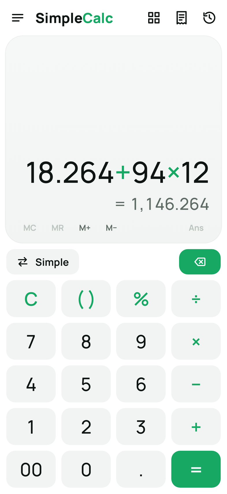
- No subscriptionEvery feature is in the free app.
- No advertsNone in the app and none on this site.
- No internetThe app has no permission to go online.
- No accountYour sums stay on your phone.
A look inside
These are the real screens, drawn from the app's own code with made-up sums. Swipe or scroll sideways to see them all.
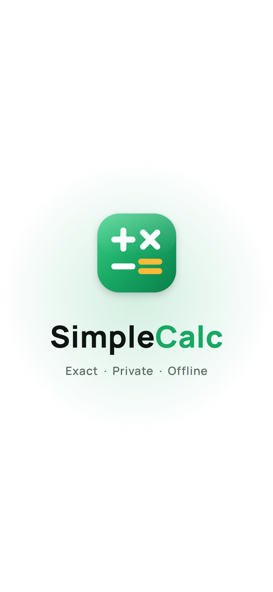
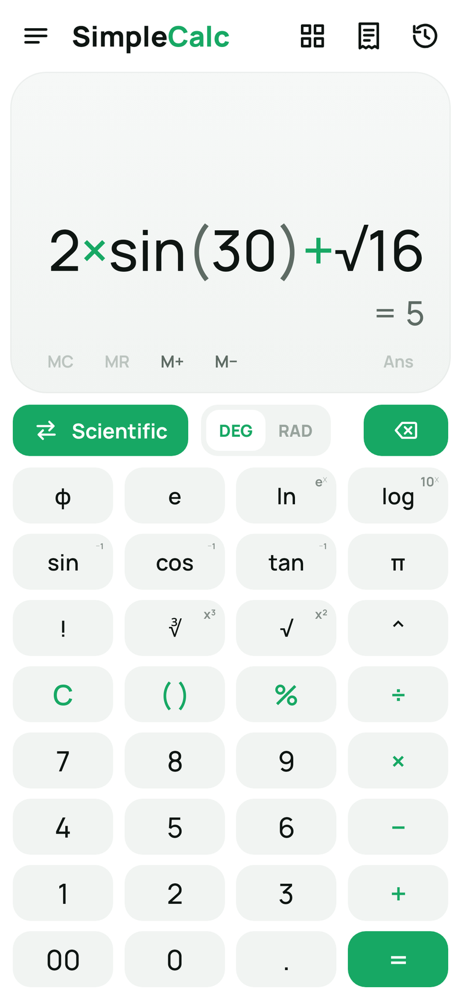
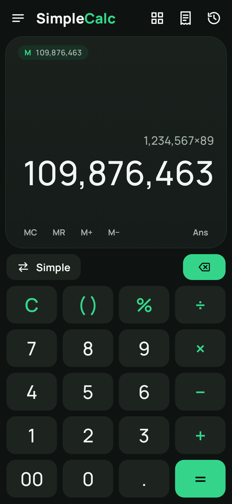
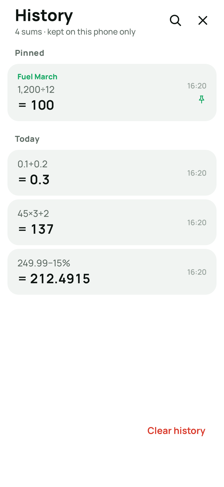
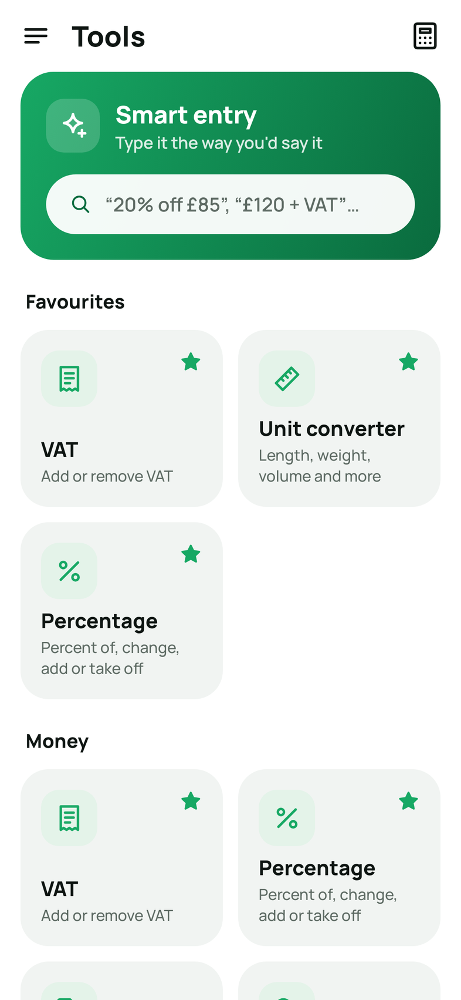
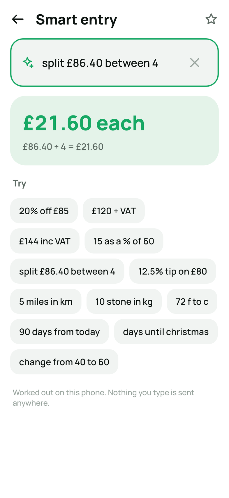
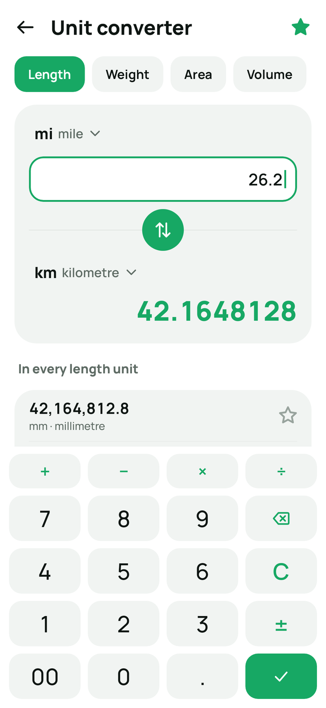
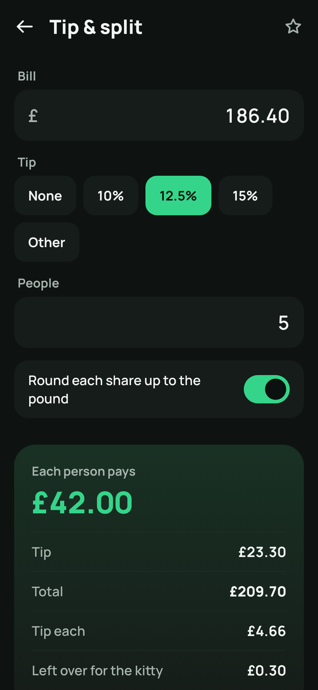
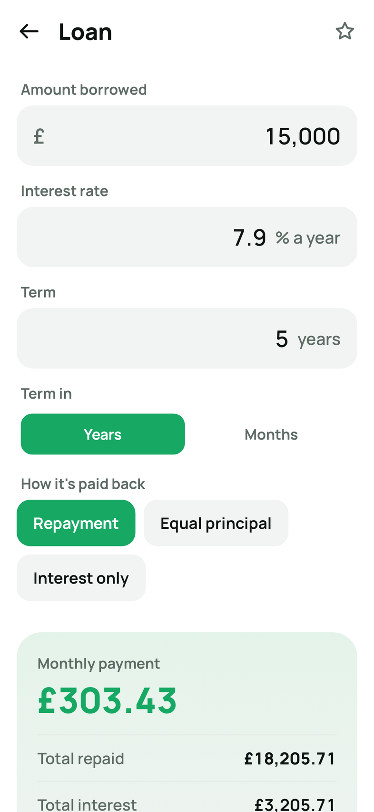
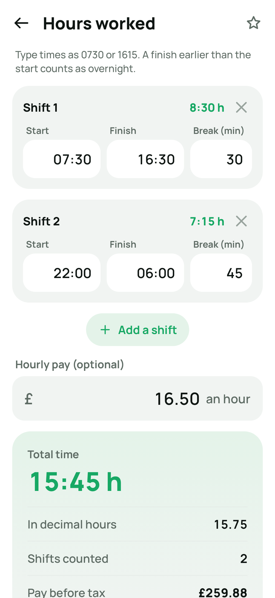
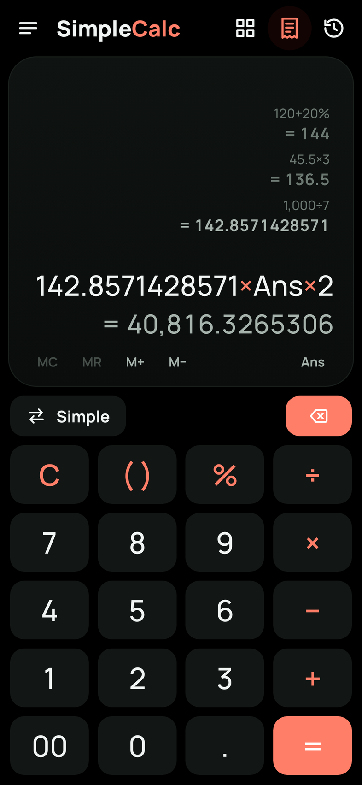
How it works
Everything you need is one tap from the calculator.
Type the sum
The answer appears as you type. Press equals and it rises into place, ready to carry on from.
Or just ask
Smart entry understands everyday questions like “£120 + VAT” or “15 as a % of 60”, and shows how it got the answer.
Open a tool
Fourteen tools for money, units, dates, health and study. Star the ones you use and they sit at the top.
Everything is in, and all of it is free
Nothing below is held back for a paid tier, because there is no paid tier.
The calculator
- Exact answers
- SimpleCalc works in exact decimals, so 0.1 + 0.2 is 0.3 and money adds up to the penny. Brackets and the order of operations are handled properly.
- The answer as you type
- The result rolls into place under the sum before you press equals. Tap anywhere in the sum to fix a digit, or swipe across it to delete.
- Percentages that make sense
- 200 + 10% is 220 and 85 − 20% is 68, the way a shop calculator works.
- Scientific when you want it
- sin, cos, tan and their inverses, ln, log, powers, roots, factorials, π, e and φ, in degrees or radians.
- Memory, Ans and paper roll
- M+, M−, MR and MC, the last answer as Ans, and a paper roll of every answer in the session.
Everyday tools
- Smart entry
- Type “20% off £85”, “£120 + VAT”, “split £86.40 between 4”, “5 miles in km” or “days until Christmas” and SimpleCalc shows the answer and the working.
- Money
- VAT added or removed, percentages, discounts, tip and split, best value per 100 g, fuel cost for a journey, and loans with a repayment table.
- Converters
- 13 groups of units shown all at once, and a currency converter that uses rates you set.
- Dates and time
- Days between dates with working days, adding or taking away days, exact age and next birthday, and hours worked across shifts with pay.
- Health and study
- BMI with the NHS bands, and a weighted average of marks with the UK degree class.
Made to be used
- Familiar keys
- The keys are the same size and layout as a standard phone calculator, with a light tap as you press them.
- Home screen widget
- A working calculator on your home screen, and a quick-settings tile that opens SimpleCalc from anywhere.
- Your look
- Light, dark and black themes, six colours, and animations you can turn off.
Privacy
- No internet at all
- SimpleCalc has no permission to go online, so it cannot send anything anywhere.
- No account, no adverts
- Nothing to sign up for and nothing tracking you.
- Your history, your file
- History stays on the phone. Export it as a spreadsheet or back everything up to a file you keep.
Your numbers are your business
No internet at all
SimpleCalc has no permission to go online. It cannot send your sums anywhere.
Nothing to sign up for
No account, no adverts and no tracking, in the app or on this site.
You hold the files
An exported history or a backup goes only where you save it.
Installing and updating
SimpleCalc is not on Google Play, so your phone asks a couple of extra questions the first time.
Download the app file
Tap Download on your phone. The file is called SimpleCalc.apk and is about 1.8 MB. If Chrome says the file might be harmful, choose Download anyway.
Allow the install
Open the file. The first time, Android asks you to allow installs from your browser. Allow it, go back, and tap Install.
Open SimpleCalc
There is nothing to set up. Start typing a sum.
To update, download the newest version and install it over the old one. Your history and settings are kept.
Questions
Is SimpleCalc really free?
Yes. There is no paid version, no subscription, no trial and no adverts, and nothing in the app is locked.
Is SimpleCalc on Google Play?
No. SimpleCalc is a personal project and is downloaded from this site as an Android app file. It needs Android 8 or later.
Does it need the internet?
No. The app does not ask Android for internet access at all, so it works with no signal and cannot go online. Check for updates, More apps and Feedback only open a page in your browser.
Why are the answers exact?
Most calculators work in binary fractions, which is why some show 0.1 + 0.2 as 0.30000000000000004. SimpleCalc does plain arithmetic in decimals, as you would on paper. Functions such as sin and log are worked out to 15 significant figures.
How does the currency converter get its rates?
From you. SimpleCalc never goes online, so you type in a rate from your bank's app or a currency website, and it shows the date you set it.
How do I add the widget and the tile?
Long-press an empty part of your home screen, choose Widgets and pick SimpleCalc. For the tile, pull down twice from the top of the screen, tap the pencil and drag SimpleCalc into your tiles.
How do I update SimpleCalc?
Download the newest version from this site and install it over the one you have. Your history and settings are kept. The app cannot check for updates itself because it cannot go online.